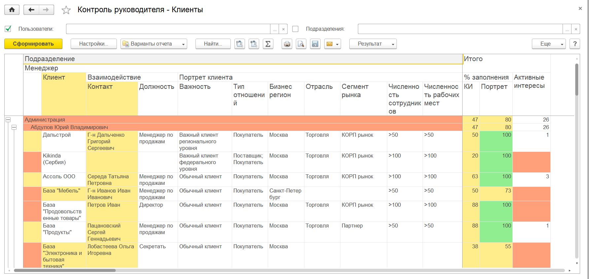
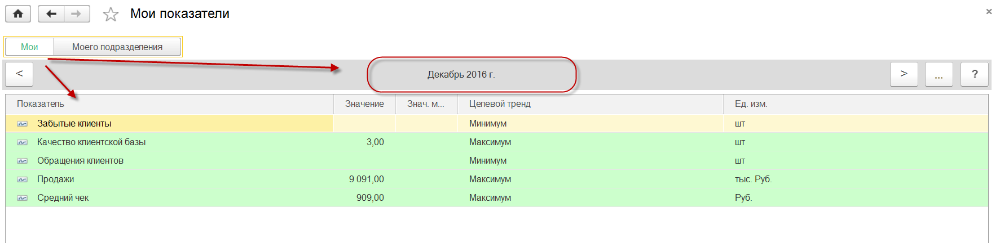

<!DOCTYPE html PUBLIC "-//W3C//DTD HTML 4.0 Transitional//EN"><html xmlns:o="urn:schemas-microsoft-com:office:office" xmlns:v="urn:schemas-microsoft-com:vml"><head><meta content="text/html; charset=utf-8" http-equiv="Content-Type"></meta><link rel="stylesheet" type="text/css" href="__STYLE__"></link><meta name="GENERATOR" content="MSHTML 11.00.9600.18538"></meta><style>A:link {
	TEXT-DECORATION: underline; FONT-WEIGHT: bold; COLOR: #0000ff
}
A:visited {
	TEXT-DECORATION: underline; FONT-WEIGHT: bold; COLOR: #0000ff
}
A:hover {
	TEXT-DECORATION: underline
}
H1 {
	FONT-SIZE: 18pt; FONT-FAMILY: Ariall, Tahoma; FONT-WEIGHT: bold; COLOR: #003366; TEXT-ALIGN: left
}
H2 {
	FONT-SIZE: 14pt; FONT-FAMILY: Arial, Tahoma; FONT-WEIGHT: bold; TEXT-ALIGN: left
}
H3 {
	FONT-SIZE: 12pt; FONT-FAMILY: Arial, Tahoma; FONT-WEIGHT: bold; TEXT-ALIGN: left
}
TABLE {
	FONT-SIZE: x-small
}
TABLE .Programtext {
	COLOR: #0000ff; PADDING-BOTTOM: 10px; PADDING-TOP: 10px; PADDING-LEFT: 10px; PADDING-RIGHT: 10px; BACKGROUND-COLOR: #f0f0f0
}
BODY {
	FONT-SIZE: x-small; FONT-FAMILY: Verdana
}
.withBorder {
	FONT-SIZE: x-small; BORDER-TOP: #ffd700 1px solid; FONT-FAMILY: Verdana; BORDER-RIGHT: #ffd700 1px solid; TEXT-ALIGN: left
}
.withBorder TD {
	BORDER-BOTTOM: #ffd700 1px solid; BORDER-LEFT: #ffd700 1px solid
}
.withBorder TH {
	BORDER-BOTTOM: #ffd700 1px solid; BORDER-LEFT: #ffd700 1px solid; BACKGROUND-COLOR: #ffffee
}
UL.TOC LI {
	LIST-STYLE-TYPE: none
}
.Programtext {
	FONT-SIZE: 10pt; FONT-FAMILY: Courier; COLOR: #000080
}
PRE.Query {
	FONT-SIZE: 10pt; FONT-FAMILY: Courier; COLOR: #000080
}
PRE.xml {
	FONT-SIZE: 10pt; FONT-FAMILY: Courier; COLOR: #000080
}
PRE.vbcode {
	FONT-SIZE: 10pt; FONT-FAMILY: Courier; COLOR: #000080
}
PRE {
	FONT-SIZE: 10pt
}
.Marker {
	BACKGROUND-COLOR: #ffff00
}
.heading {
	BORDER-BOTTOM: #ffd700 1px solid; FONT-WEIGHT: bold; BORDER-LEFT: #ffd700 1px solid; BACKGROUND-COLOR: #ffffee
}
.tip {
	BORDER-LEFT-WIDTH: 0px; BORDER-RIGHT-WIDTH: 0px; WIDTH: 95%; BORDER-BOTTOM-WIDTH: 0px; PADDING-BOTTOM: 15px; PADDING-TOP: 15px; PADDING-LEFT: 15px; PADDING-RIGHT: 15px; BORDER-TOP-WIDTH: 0px; BACKGROUND-COLOR: #eeffee
}
.tip TD {
	BORDER-LEFT-WIDTH: 0px; BORDER-RIGHT-WIDTH: 0px; WIDTH: 95%; BORDER-BOTTOM-WIDTH: 0px; PADDING-BOTTOM: 15px; PADDING-TOP: 15px; PADDING-LEFT: 15px; PADDING-RIGHT: 15px; BORDER-TOP-WIDTH: 0px; BACKGROUND-COLOR: #eeffee
}
.important {
	BORDER-LEFT-WIDTH: 0px; BORDER-RIGHT-WIDTH: 0px; WIDTH: 95%; BORDER-BOTTOM-WIDTH: 0px; PADDING-BOTTOM: 15px; PADDING-TOP: 15px; PADDING-LEFT: 15px; PADDING-RIGHT: 15px; BORDER-TOP-WIDTH: 0px; BACKGROUND-COLOR: #ffeeee
}
.important TD {
	BORDER-LEFT-WIDTH: 0px; BORDER-RIGHT-WIDTH: 0px; WIDTH: 95%; BORDER-BOTTOM-WIDTH: 0px; PADDING-BOTTOM: 15px; PADDING-TOP: 15px; PADDING-LEFT: 15px; PADDING-RIGHT: 15px; BORDER-TOP-WIDTH: 0px; BACKGROUND-COLOR: #ffeeee
}
.note {
	BORDER-LEFT-WIDTH: 0px; BORDER-RIGHT-WIDTH: 0px; WIDTH: 95%; BORDER-BOTTOM-WIDTH: 0px; PADDING-BOTTOM: 15px; PADDING-TOP: 15px; PADDING-LEFT: 15px; PADDING-RIGHT: 15px; BORDER-TOP-WIDTH: 0px; BACKGROUND-COLOR: #eeeeff
}
.note TD {
	BORDER-LEFT-WIDTH: 0px; BORDER-RIGHT-WIDTH: 0px; WIDTH: 95%; BORDER-BOTTOM-WIDTH: 0px; PADDING-BOTTOM: 15px; PADDING-TOP: 15px; PADDING-LEFT: 15px; PADDING-RIGHT: 15px; BORDER-TOP-WIDTH: 0px; BACKGROUND-COLOR: #eeeeff
}
.k {
	COLOR: red
}
.c {
	COLOR: green
}
.s {
	COLOR: black
}
.n {
	COLOR: black
}
.p {
	COLOR: brown
}
OL LI {
	MARGIN-BOTTOM: 12pt
}
</style></head><body>
<div align="left"><nobr></img>      </nobr></div>
<h1><font face="Times New Roman, serif"><font size="3"><font style="FONT-SIZE: 16pt" size="6"><font size="5" face="Tahoma">Роль "Менеджер" </font></font></font></font></h1>
<h1><span style="FONT-SIZE: 12pt; FONT-FAMILY: &quot;Times New Roman&quot;; mso-fareast-language: RU"><span style="FONT-SIZE: 12pt; FONT-FAMILY: &quot;Arial&quot;,sans-serif; mso-fareast-language: EN-US; mso-ansi-language: RU; mso-fareast-font-family: &quot;Times New Roman&quot;; mso-bidi-font-size: 14.0pt; mso-bidi-language: AR-SA">Просмотр пользователем назначенных ему показателей</span></span></h1><font size="3"><font face="Times New Roman, serif"><font size="4"><span style="FONT-SIZE: 12pt; FONT-FAMILY: &quot;Times New Roman&quot;; mso-fareast-language: RU"><span style="FONT-SIZE: 12pt; FONT-FAMILY: &quot;Times New Roman&quot;,serif; mso-fareast-language: EN-US; mso-ansi-language: RU; mso-fareast-font-family: &quot;Times New Roman&quot;; mso-bidi-language: AR-SA">
<blockquote style="MARGIN-RIGHT: 0px" dir="ltr">
<p class="MsoNormal" style="TEXT-ALIGN: justify; MARGIN: 0cm 0cm 0pt">Назначенные пользователю показатели доступны для просмотра на рабочих местах: <a href="marker_form://АРММоиДела">«Мои дела»</a> и <a href="marker_form://АРММоиПродажи">«Мои продажи»</a>. На этих рабочих местах показатели отображаются в виде виджетов при установке у них признака «Ещё – Показать/скрыть виджеты». Для просмотра доступны виджеты только по показателям, назначенным непосредственно для данного пользователя.</p></blockquote>
<blockquote style="MARGIN-RIGHT: 0px" dir="ltr">
<p class="MsoNormal" style="TEXT-ALIGN: justify; MARGIN: 0cm 0cm 0pt">Для контроля показателя с помощью виджета используется цветовая схема в виде "светофора" и выполняется окрашивание значения показателя:</p>
<ul><li>
<div class="MsoNormal" style="TEXT-ALIGN: justify; MARGIN: 0cm 0cm 0pt"><o:p><p class="MsoListParagraph" style="TEXT-ALIGN: justify; MARGIN: 0cm 0cm 0pt 36pt; TEXT-INDENT: -18pt; mso-list: l0 level1 lfo1"><b style="mso-bidi-font-weight: normal">Красный цвет</b> - недопустимое значение</p></o:p></div>
</li><li>
<div class="MsoNormal" style="TEXT-ALIGN: justify; MARGIN: 0cm 0cm 0pt"><o:p><p class="MsoListParagraph" style="TEXT-ALIGN: justify; MARGIN: 0cm 0cm 0pt 36pt; TEXT-INDENT: -18pt; mso-list: l0 level1 lfo1"><span style="FONT-SIZE: 12pt; FONT-FAMILY: &quot;Times New Roman&quot;,serif; mso-fareast-language: EN-US; mso-ansi-language: RU; mso-fareast-font-family: &quot;Times New Roman&quot;; mso-bidi-language: AR-SA"><strong>Оранжевый цвет</strong></span><span style="FONT-SIZE: 12pt; FONT-FAMILY: &quot;Times New Roman&quot;,serif; mso-fareast-language: EN-US; mso-ansi-language: RU; mso-fareast-font-family: &quot;Times New Roman&quot;; mso-bidi-language: AR-SA"> - допустимое значение или цель достигнута с негативным трендом</span></p></o:p></div>
</li><li>
<div class="MsoNormal" style="TEXT-ALIGN: justify; MARGIN: 0cm 0cm 0pt"><o:p><p class="MsoListParagraph" style="TEXT-ALIGN: justify; MARGIN: 0cm 0cm 0pt 36pt; TEXT-INDENT: -18pt; mso-list: l0 level1 lfo1"><span style="FONT-SIZE: 12pt; FONT-FAMILY: &quot;Times New Roman&quot;,serif; mso-fareast-language: EN-US; mso-ansi-language: RU; mso-fareast-font-family: &quot;Times New Roman&quot;; mso-bidi-language: AR-SA"><span style="FONT-SIZE: 12pt; FONT-FAMILY: &quot;Times New Roman&quot;,serif; mso-fareast-language: EN-US; mso-ansi-language: RU; mso-fareast-font-family: &quot;Times New Roman&quot;; mso-bidi-language: AR-SA"><strong>Зеленый цвет</strong></span><span style="FONT-SIZE: 12pt; FONT-FAMILY: &quot;Times New Roman&quot;,serif; mso-fareast-language: EN-US; mso-ansi-language: RU; mso-fareast-font-family: &quot;Times New Roman&quot;; mso-bidi-language: AR-SA"> - допустимое значение или цель достигнута</span></span><o:p></o:p></p></o:p></div></li></ul></blockquote>
<p class="MsoNormal" style="TEXT-ALIGN: justify; MARGIN: 0cm 0cm 0pt; LINE-HEIGHT: normal; TEXT-INDENT: 35.4pt; mso-margin-top-alt: auto">Для указания направления тренда текущего значения показателя относительно предыдущих значений используется пиктограмма:</p>
<ul><li>
<div style="TEXT-ALIGN: justify; MARGIN: 0cm 0cm 0pt; LINE-HEIGHT: normal; TEXT-INDENT: 35.4pt; mso-margin-top-alt: auto"><strong>Стрелочка зеленого цвета</strong> - тренд положительный (идет улучшение значения показателя)</div>
</li><li>
<div style="TEXT-ALIGN: justify; MARGIN: 0cm 0cm 0pt; LINE-HEIGHT: normal; TEXT-INDENT: 35.4pt; mso-margin-top-alt: auto"><strong>Стрелочка желтого цвета</strong> - тренд не изменился относительно прошлых значений (показатель стабилен, в случае нахождения показателя в "зеленой" зоне - это положительный тренд)</div>
</li><li>
<div style="TEXT-ALIGN: justify; MARGIN: 0cm 0cm 0pt; LINE-HEIGHT: normal; TEXT-INDENT: 35.4pt; mso-margin-top-alt: auto"><strong>Стрелочка красного цвета</strong> - тренд негативный (идет ухудшение значения показателя)</div></li></ul><p class="MsoNormal" style="TEXT-ALIGN: justify; MARGIN: 0cm 0cm 0pt; LINE-HEIGHT: normal; TEXT-INDENT: 35.4pt; mso-margin-top-alt: auto"><span style="FONT-SIZE: 12pt; FONT-FAMILY: &quot;Times New Roman&quot;; mso-fareast-language: RU"><span style="FONT-SIZE: 12pt; FONT-FAMILY: &quot;Times New Roman&quot;,serif; mso-fareast-language: EN-US; mso-ansi-language: RU; mso-fareast-font-family: &quot;Times New Roman&quot;; mso-bidi-language: AR-SA"></img></span></span></p>
<p class="MsoNormal" style="TEXT-ALIGN: justify; MARGIN: 0cm 0cm 0pt; LINE-HEIGHT: normal; TEXT-INDENT: 35.4pt; mso-margin-top-alt: auto"><span style="FONT-SIZE: 12pt; FONT-FAMILY: &quot;Times New Roman&quot;; mso-fareast-language: RU"><span style="FONT-SIZE: 12pt; FONT-FAMILY: &quot;Times New Roman&quot;,serif; mso-fareast-language: EN-US; mso-ansi-language: RU; mso-fareast-font-family: &quot;Times New Roman&quot;; mso-bidi-language: AR-SA"></span></span> </p>
<p class="MsoNormal" style="TEXT-ALIGN: justify; MARGIN: 0cm 0cm 0pt; LINE-HEIGHT: normal; TEXT-INDENT: 35.4pt; mso-margin-top-alt: auto"><span style="FONT-SIZE: 12pt; FONT-FAMILY: &quot;Times New Roman&quot;; mso-fareast-language: RU"><span style="FONT-SIZE: 12pt; FONT-FAMILY: &quot;Times New Roman&quot;,serif; mso-fareast-language: EN-US; mso-ansi-language: RU; mso-fareast-font-family: &quot;Times New Roman&quot;; mso-bidi-language: AR-SA"><span style="FONT-SIZE: 12pt; FONT-FAMILY: &quot;Times New Roman&quot;,serif; mso-fareast-language: EN-US; mso-ansi-language: RU; mso-fareast-font-family: &quot;Times New Roman&quot;; mso-bidi-language: AR-SA">В случае негативного тренда, а также нахождения показателя вне зеленой зоны, пользователь может расшифровать его с целью выполнения действий по улучшению значения показателя. Для расшифровки показателя необходимо:</span></span></span></p>
<ul><li>
<div class="MsoNormal" style="TEXT-ALIGN: justify; MARGIN: 0cm 0cm 0pt; LINE-HEIGHT: normal; TEXT-INDENT: 35.4pt; mso-margin-top-alt: auto"><span style="FONT-SIZE: 12pt; FONT-FAMILY: &quot;Times New Roman&quot;; mso-fareast-language: RU"><span style="FONT-SIZE: 12pt; FONT-FAMILY: &quot;Times New Roman&quot;,serif; mso-fareast-language: EN-US; mso-ansi-language: RU; mso-fareast-font-family: &quot;Times New Roman&quot;; mso-bidi-language: AR-SA"><span style="FONT-SIZE: 12pt; FONT-FAMILY: &quot;Times New Roman&quot;,serif; mso-fareast-language: EN-US; mso-ansi-language: RU; mso-fareast-font-family: &quot;Times New Roman&quot;; mso-bidi-language: AR-SA"><span style="FONT-SIZE: 12pt; FONT-FAMILY: &quot;Times New Roman&quot;,serif; mso-fareast-language: EN-US; mso-ansi-language: RU; mso-fareast-font-family: &quot;Times New Roman&quot;; mso-bidi-language: AR-SA">установить курсор команду «Расшифровать», отображаемую в виджете</span></span></span></span></div>
</li><li>
<div class="MsoNormal" style="TEXT-ALIGN: justify; MARGIN: 0cm 0cm 0pt; LINE-HEIGHT: normal; TEXT-INDENT: 35.4pt; mso-margin-top-alt: auto"><span style="FONT-SIZE: 12pt; FONT-FAMILY: &quot;Times New Roman&quot;; mso-fareast-language: RU"><span style="FONT-SIZE: 12pt; FONT-FAMILY: &quot;Times New Roman&quot;,serif; mso-fareast-language: EN-US; mso-ansi-language: RU; mso-fareast-font-family: &quot;Times New Roman&quot;; mso-bidi-language: AR-SA"><span style="FONT-SIZE: 12pt; FONT-FAMILY: &quot;Times New Roman&quot;,serif; mso-fareast-language: EN-US; mso-ansi-language: RU; mso-fareast-font-family: &quot;Times New Roman&quot;; mso-bidi-language: AR-SA"><span style="FONT-SIZE: 12pt; FONT-FAMILY: &quot;Times New Roman&quot;,serif; mso-fareast-language: EN-US; mso-ansi-language: RU; mso-fareast-font-family: &quot;Times New Roman&quot;; mso-bidi-language: AR-SA"><span style="FONT-SIZE: 12pt; FONT-FAMILY: &quot;Times New Roman&quot;,serif; mso-fareast-language: EN-US; mso-ansi-language: RU; mso-fareast-font-family: &quot;Times New Roman&quot;; mso-bidi-language: AR-SA">одинарным щелчком мыши выполнить команду «Расшифровать»</span></span></span></span></span></div></li></ul><p class="MsoNormal" style="TEXT-ALIGN: justify; MARGIN: 0cm 0cm 0pt; LINE-HEIGHT: normal; TEXT-INDENT: 35.4pt; mso-margin-top-alt: auto"><span style="FONT-SIZE: 12pt; FONT-FAMILY: &quot;Times New Roman&quot;; mso-fareast-language: RU"><span style="FONT-SIZE: 12pt; FONT-FAMILY: &quot;Times New Roman&quot;,serif; mso-fareast-language: EN-US; mso-ansi-language: RU; mso-fareast-font-family: &quot;Times New Roman&quot;; mso-bidi-language: AR-SA"><span style="FONT-SIZE: 12pt; FONT-FAMILY: &quot;Times New Roman&quot;,serif; mso-fareast-language: EN-US; mso-ansi-language: RU; mso-fareast-font-family: &quot;Times New Roman&quot;; mso-bidi-language: AR-SA"><span style="FONT-SIZE: 12pt; FONT-FAMILY: &quot;Times New Roman&quot;,serif; mso-fareast-language: EN-US; mso-ansi-language: RU; mso-fareast-font-family: &quot;Times New Roman&quot;; mso-bidi-language: AR-SA"><span style="FONT-SIZE: 12pt; FONT-FAMILY: &quot;Times New Roman&quot;,serif; mso-fareast-language: EN-US; mso-ansi-language: RU; mso-fareast-font-family: &quot;Times New Roman&quot;; mso-bidi-language: AR-SA"><span style="FONT-SIZE: 12pt; FONT-FAMILY: &quot;Times New Roman&quot;,serif; mso-fareast-language: EN-US; mso-ansi-language: RU; mso-fareast-font-family: &quot;Times New Roman&quot;; mso-bidi-language: AR-SA">Отчет, который назначен для расшифровки, определяется на этапе заполнения шаблона показателя. Данные в отчете будут представлены с той периодичностью, которая указана в шаблоне показателя в реквизите «Период контроля».</span></span></span></span></span></span></p>
<p class="MsoNormal" style="TEXT-ALIGN: justify; MARGIN: 0cm 0cm 0pt; LINE-HEIGHT: normal; TEXT-INDENT: 35.4pt; mso-margin-top-alt: auto"><span style="FONT-SIZE: 12pt; FONT-FAMILY: &quot;Times New Roman&quot;; mso-fareast-language: RU"><span style="FONT-SIZE: 12pt; FONT-FAMILY: &quot;Times New Roman&quot;,serif; mso-fareast-language: EN-US; mso-ansi-language: RU; mso-fareast-font-family: &quot;Times New Roman&quot;; mso-bidi-language: AR-SA"><span style="FONT-SIZE: 12pt; FONT-FAMILY: &quot;Times New Roman&quot;,serif; mso-fareast-language: EN-US; mso-ansi-language: RU; mso-fareast-font-family: &quot;Times New Roman&quot;; mso-bidi-language: AR-SA"><span style="FONT-SIZE: 12pt; FONT-FAMILY: &quot;Times New Roman&quot;,serif; mso-fareast-language: EN-US; mso-ansi-language: RU; mso-fareast-font-family: &quot;Times New Roman&quot;; mso-bidi-language: AR-SA"><span style="FONT-SIZE: 12pt; FONT-FAMILY: &quot;Times New Roman&quot;,serif; mso-fareast-language: EN-US; mso-ansi-language: RU; mso-fareast-font-family: &quot;Times New Roman&quot;; mso-bidi-language: AR-SA"><span style="FONT-SIZE: 12pt; FONT-FAMILY: &quot;Times New Roman&quot;,serif; mso-fareast-language: EN-US; mso-ansi-language: RU; mso-fareast-font-family: &quot;Times New Roman&quot;; mso-bidi-language: AR-SA"></img></span></span></span></span></span></span></p>
<p class="MsoNormal" style="TEXT-ALIGN: justify; MARGIN: 0cm 0cm 0pt; LINE-HEIGHT: normal; TEXT-INDENT: 35.4pt; mso-margin-top-alt: auto"><span style="FONT-SIZE: 12pt; FONT-FAMILY: &quot;Times New Roman&quot;; mso-fareast-language: RU"><span style="FONT-SIZE: 12pt; FONT-FAMILY: &quot;Times New Roman&quot;,serif; mso-fareast-language: EN-US; mso-ansi-language: RU; mso-fareast-font-family: &quot;Times New Roman&quot;; mso-bidi-language: AR-SA"></span></span> </p>
<p class="MsoNormal" style="TEXT-ALIGN: justify; MARGIN: 0cm 0cm 0pt; LINE-HEIGHT: normal; TEXT-INDENT: 35.4pt; mso-margin-top-alt: auto"><span style="FONT-SIZE: 12pt; FONT-FAMILY: &quot;Times New Roman&quot;; mso-fareast-language: RU"><span style="FONT-SIZE: 12pt; FONT-FAMILY: &quot;Times New Roman&quot;,serif; mso-fareast-language: EN-US; mso-ansi-language: RU; mso-fareast-font-family: &quot;Times New Roman&quot;; mso-bidi-language: AR-SA"><span style="FONT-SIZE: 12pt; FONT-FAMILY: &quot;Times New Roman&quot;,serif; mso-fareast-language: EN-US; mso-ansi-language: RU; mso-fareast-font-family: &quot;Times New Roman&quot;; mso-bidi-language: AR-SA">Пользователь может просмотреть список назначенных ему показателей и их значений как на текущий месяц, так и на другие периоды. Для этого пользователь заходит в раздел «Органайзер – Мои показатели». В открывшейся форме по умолчанию отображаются все назначенные показатели для пользователя на текущий месяц:</span></span></span></p>
<p class="MsoNormal" style="TEXT-ALIGN: justify; MARGIN: 0cm 0cm 0pt; LINE-HEIGHT: normal; TEXT-INDENT: 35.4pt; mso-margin-top-alt: auto"><span style="FONT-SIZE: 12pt; FONT-FAMILY: &quot;Times New Roman&quot;; mso-fareast-language: RU"><span style="FONT-SIZE: 12pt; FONT-FAMILY: &quot;Times New Roman&quot;,serif; mso-fareast-language: EN-US; mso-ansi-language: RU; mso-fareast-font-family: &quot;Times New Roman&quot;; mso-bidi-language: AR-SA"><span style="FONT-SIZE: 12pt; FONT-FAMILY: &quot;Times New Roman&quot;,serif; mso-fareast-language: EN-US; mso-ansi-language: RU; mso-fareast-font-family: &quot;Times New Roman&quot;; mso-bidi-language: AR-SA"></img></span></span></span></p>
<p class="MsoNormal" style="TEXT-ALIGN: justify; MARGIN: 0cm 0cm 0pt; LINE-HEIGHT: normal; TEXT-INDENT: 35.4pt; mso-margin-top-alt: auto"><span style="FONT-SIZE: 12pt; FONT-FAMILY: &quot;Times New Roman&quot;; mso-fareast-language: RU"><span style="FONT-SIZE: 12pt; FONT-FAMILY: &quot;Times New Roman&quot;,serif; mso-fareast-language: EN-US; mso-ansi-language: RU; mso-fareast-font-family: &quot;Times New Roman&quot;; mso-bidi-language: AR-SA"><span style="FONT-SIZE: 12pt; FONT-FAMILY: &quot;Times New Roman&quot;,serif; mso-fareast-language: EN-US; mso-ansi-language: RU; mso-fareast-font-family: &quot;Times New Roman&quot;; mso-bidi-language: AR-SA"></span></span></span> </p><span style="FONT-SIZE: 12pt; FONT-FAMILY: &quot;Times New Roman&quot;; mso-fareast-language: RU"><span style="FONT-SIZE: 12pt; FONT-FAMILY: &quot;Times New Roman&quot;,serif; mso-fareast-language: EN-US; mso-ansi-language: RU; mso-fareast-font-family: &quot;Times New Roman&quot;; mso-bidi-language: AR-SA"><span style="FONT-SIZE: 12pt; FONT-FAMILY: &quot;Times New Roman&quot;,serif; mso-fareast-language: EN-US; mso-ansi-language: RU; mso-fareast-font-family: &quot;Times New Roman&quot;; mso-bidi-language: AR-SA">
<p class="MsoToc1" style="MARGIN: 0cm 0cm 5pt; tab-stops: right dotted 467.25pt"><font size="3"><a href="marker_form://ИспользованиеПоказателейРуководитель">Роль "Руководитель". Назначение показателей менеджерам</a></font></p>
<p class="MsoToc1" style="MARGIN: 0cm 0cm 5pt; tab-stops: right dotted 467.25pt"><font size="3"><a href="marker_form://ИспользованиеПоказателейРуководительАнализ">Роль "Руководитель". Контроль и анализ показателей</a></font></p></span></span></span></span></span></font></font></font><font size="4"><font face="Times New Roman, serif"><font size="3"></font></font></font></body></html>